会议地点：长沙世纪金源大饭店
酒店地址：湖南省长沙市开福区金泰路199号
交通情况
长沙黄花国际机场 长沙市长沙县黄花镇机场大道，距离会场约32公里
（打车车程约40分钟，价格75元左右） |
长沙高铁南站长沙市雨花区花候路，距离会场约24公里
（打车车程约30分钟，价格60元左右） |
长沙火车站长沙市芙蓉区车站中路406号，距离会场约9.4公里
（打车车程约22分钟，价格25元左右） |
公交线路
1、长沙黄花国际机场：磁浮机场站乘坐磁悬浮列车，前往磁浮高铁站（2站，16分钟）；在高铁站乘坐地铁2号线梅溪湖西方向，在五一广场站（11站，22分钟）换成地铁1号线开福区政府方向，在马厂站1号口下车，步行15分钟到达长沙世纪金源大饭店。
2、长沙高铁南站：在高铁站乘坐地铁2号线梅溪湖西方向，在五一广场站（11站，22分钟）换成地铁1号线开福区政府方向，在马厂站1号口下车，步行15分钟到达长沙世纪金源大饭店。
3、长沙火车站：在长沙火车站乘坐地铁2号线梅溪湖西方向，在五一广场站（11站，22分钟）换成地铁1号线开福区政府方向，在马厂站1号口下车，步行15分钟到达长沙世纪金源大饭店。
2、长沙高铁南站：在高铁站乘坐地铁2号线梅溪湖西方向，在五一广场站（11站，22分钟）换成地铁1号线开福区政府方向，在马厂站1号口下车，步行15分钟到达长沙世纪金源大饭店。
3、长沙火车站：在长沙火车站乘坐地铁2号线梅溪湖西方向，在五一广场站（11站，22分钟）换成地铁1号线开福区政府方向，在马厂站1号口下车，步行15分钟到达长沙世纪金源大饭店。
酒店预订
扫描二维码预定酒店。
酒店房间照片
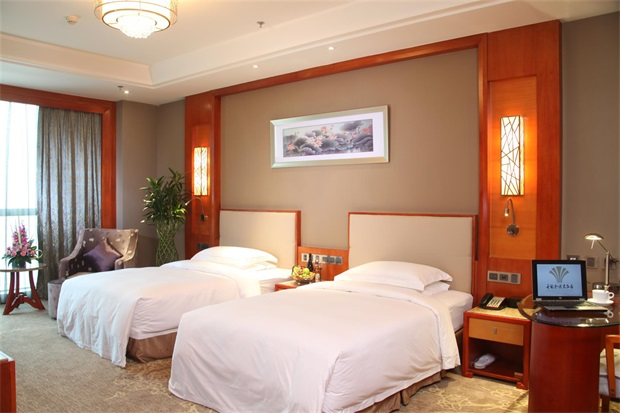
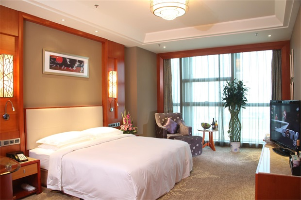
场地周围环境
1、橘子洲：橘子洲又称橘洲、水陆洲，它位于长沙市区对面的湘江中流，是湘江下游众多冲积沙洲之一，为长沙重要名胜之一。1952年，毛泽东同志从广州回到湖南领导农民运动，寒秋时节，重游橘子洲，写下了《沁园春.长沙》，因此，橘子洲声名大振。
橘子洲景区门票免费，可乘坐小火车在洲上漫游，感受青年时代毛泽东“问苍茫大地，谁主沉浮”的豪情与壮志！
2、岳麓书院：岳麓书院是中国历史上赫赫闻名的四大书院之一，坐落于长沙湘江西岸的岳麓山脚下，作为世界上最古老的学府之一，其古代传统的书院建筑至今被完整保存，每一组院落、每一块石碑、每一枚砖瓦、每一支风荷，都闪烁着时光淬炼的人文精神。1988年，岳麓书院建筑群被国务院批准为第三批全国重点文物保护单位。 今天的岳麓书院不仅是文史哲人才培养和研究基地，湖南省旅游胜地，更是整个长沙市的文化窗口和文化名片。
3、湖南省博物馆：湖南省博物馆是中国首批国家一级博物馆、中央地方共建的八个国家级重点博物馆之一。展厅面积为2.7万平方米，有馆藏文物18万余件，尤以长沙马王堆汉墓出土文物、商周青铜器、楚文物、历代陶瓷、书画和近现代文物等最具特色，非常值得观看。
4、三馆一厅：长沙三馆一厅又称长沙滨江文化园，坐落于浏阳河与湘江交汇处的新河三角洲，西滨湘江，北临浏阳河，东为湘江大道，南与北辰交界，占地总面积186亩，总建筑面积约15万平方米。包含长沙博物馆、长沙图书馆、长沙规划馆、长沙音乐厅四个场馆。
5、五一广场：五一广场处于长沙商业圈的最中心，也是长沙历史最悠久的区域，古长沙的城址即为今天的五一广场及其周围区域，在几千年的历史中，五一广场周围一直都是历代古长沙的官署所在地。五一商圈已稳居长沙中心商圈的老大地位，影响全湖南。 打卡点推荐：火宫殿、IFS国金中心、茶颜悦色、墨茉点心局、文和友、黑色经典臭豆腐等。
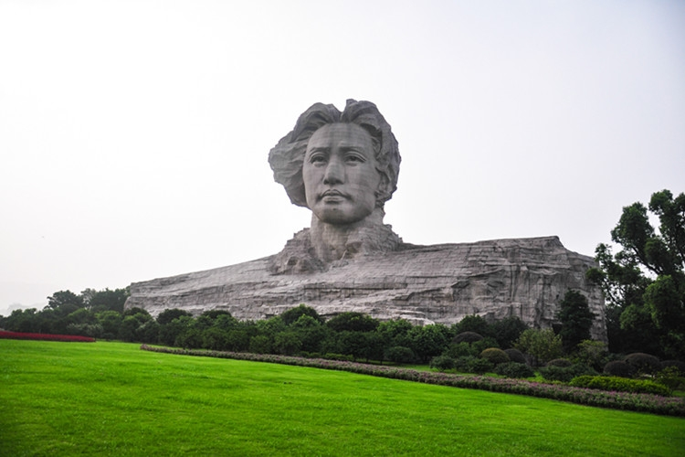
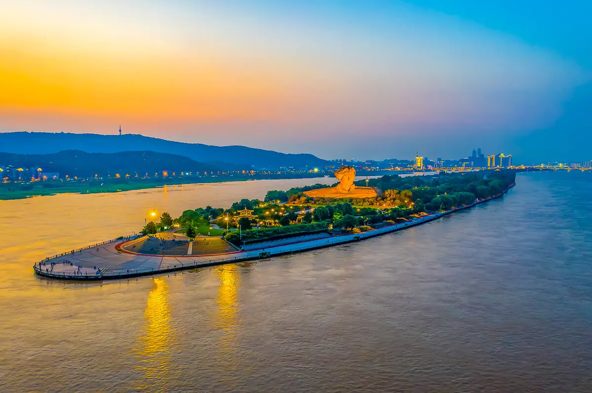
2、岳麓书院：岳麓书院是中国历史上赫赫闻名的四大书院之一，坐落于长沙湘江西岸的岳麓山脚下，作为世界上最古老的学府之一，其古代传统的书院建筑至今被完整保存，每一组院落、每一块石碑、每一枚砖瓦、每一支风荷，都闪烁着时光淬炼的人文精神。1988年，岳麓书院建筑群被国务院批准为第三批全国重点文物保护单位。 今天的岳麓书院不仅是文史哲人才培养和研究基地，湖南省旅游胜地，更是整个长沙市的文化窗口和文化名片。
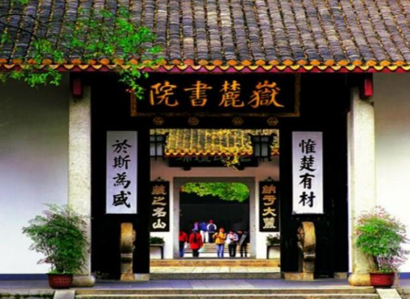
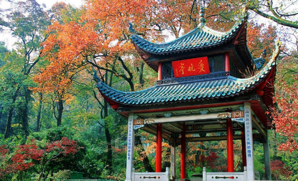
3、湖南省博物馆：湖南省博物馆是中国首批国家一级博物馆、中央地方共建的八个国家级重点博物馆之一。展厅面积为2.7万平方米，有馆藏文物18万余件，尤以长沙马王堆汉墓出土文物、商周青铜器、楚文物、历代陶瓷、书画和近现代文物等最具特色，非常值得观看。
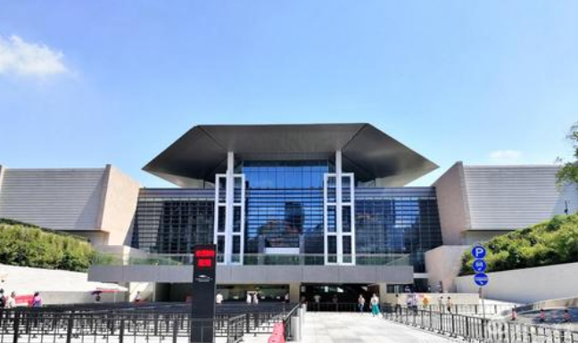
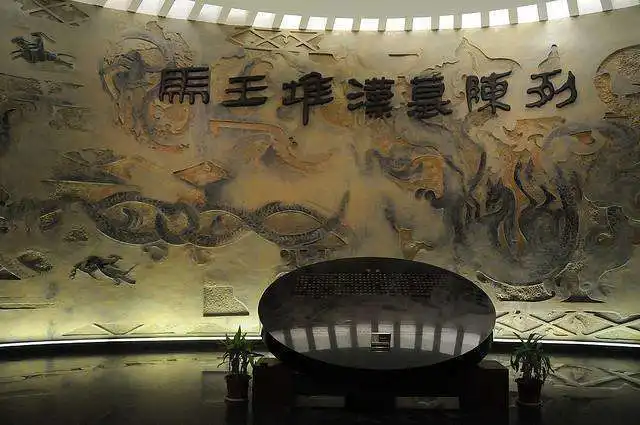
4、三馆一厅：长沙三馆一厅又称长沙滨江文化园，坐落于浏阳河与湘江交汇处的新河三角洲，西滨湘江，北临浏阳河，东为湘江大道，南与北辰交界，占地总面积186亩，总建筑面积约15万平方米。包含长沙博物馆、长沙图书馆、长沙规划馆、长沙音乐厅四个场馆。
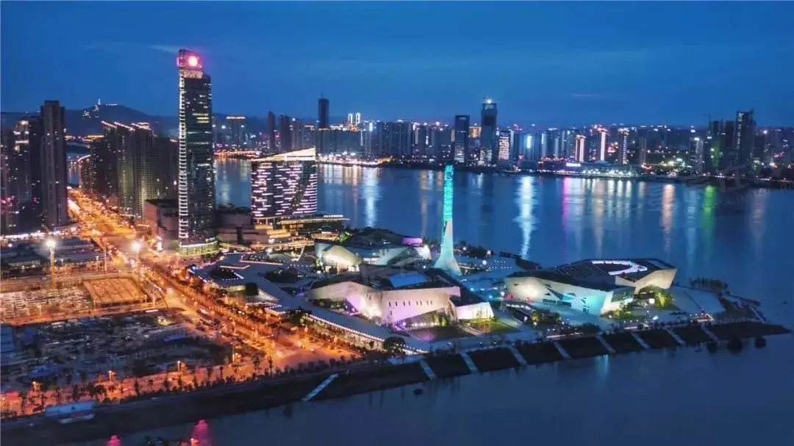
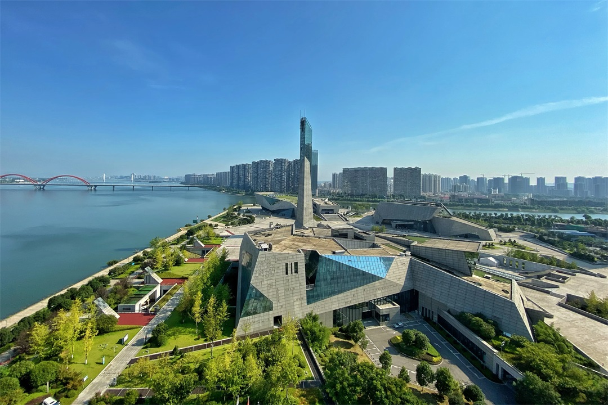
5、五一广场：五一广场处于长沙商业圈的最中心，也是长沙历史最悠久的区域，古长沙的城址即为今天的五一广场及其周围区域，在几千年的历史中，五一广场周围一直都是历代古长沙的官署所在地。五一商圈已稳居长沙中心商圈的老大地位，影响全湖南。 打卡点推荐：火宫殿、IFS国金中心、茶颜悦色、墨茉点心局、文和友、黑色经典臭豆腐等。
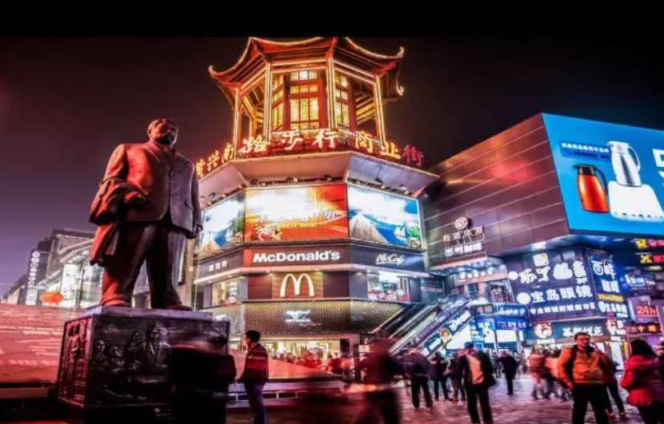
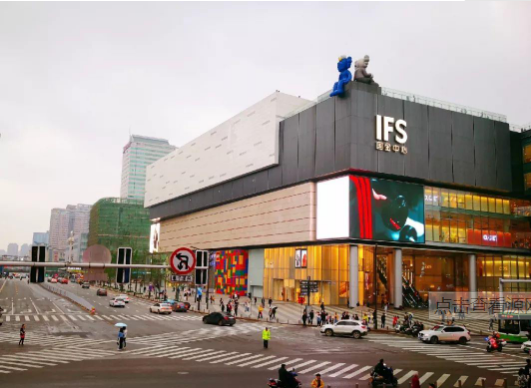